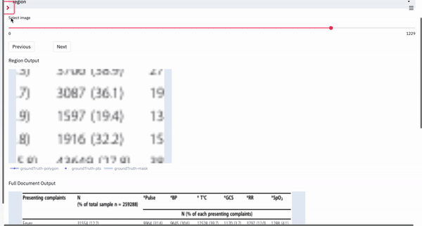

Description of Settings in Fully Automatic layout.
Overview
Some settings of the current layout instance (Fully Automatic in this case) can be configured on the left-navbar of the app. The navbar can be hidden by clicking the x on the top-right of the navbar, and can be expanded by clicking the > in the top-left of the page when it is hidden.
Shown below is a gif of how a user would go about changing the settings:

- The user can select the main page layout type they would like to choose (OCR, Fully Automatic Region Parsing and Box-Supervised Region Parsing) in the
Go Todropdown. - In the selected layout, the user can select the instance of the layout they would like to view (in the gif example, the instances were PubNet, FullyAutomatic and DocBank) under the
Choose Pagedropdown. - If the user has different data splits in their dataset (train/test/val), the user can select the desired split under the
Select datasetdropdown. If there are none, the app creates a defaultdatasplit. - If the data has metrics computed for the regions as well as the full document, the user can sort the data being served in ascending or descending order according to that metric. Once selected, the documents served during navigation will be in that order. These can be selected under the
Sort ByandSort Orderdropdowns.
Display Options
The outputs selected on the plot legend are temporary selections, i.e. they do not persists between images. Hence, the user can select those outputs they wish to be displayed constantly under the Display Options setting. Every output will have a checkbox, and those outputs selected will be continuously displayed between images served during navigation.